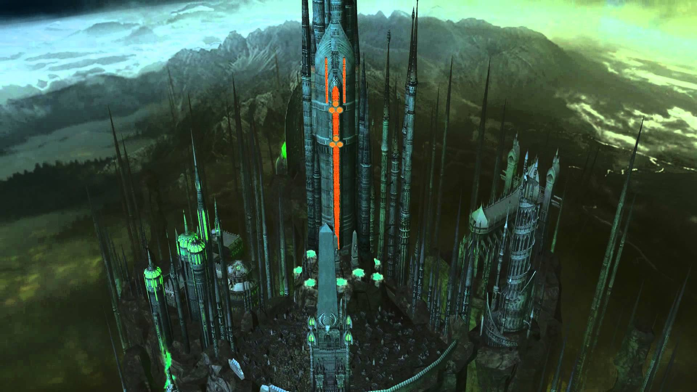
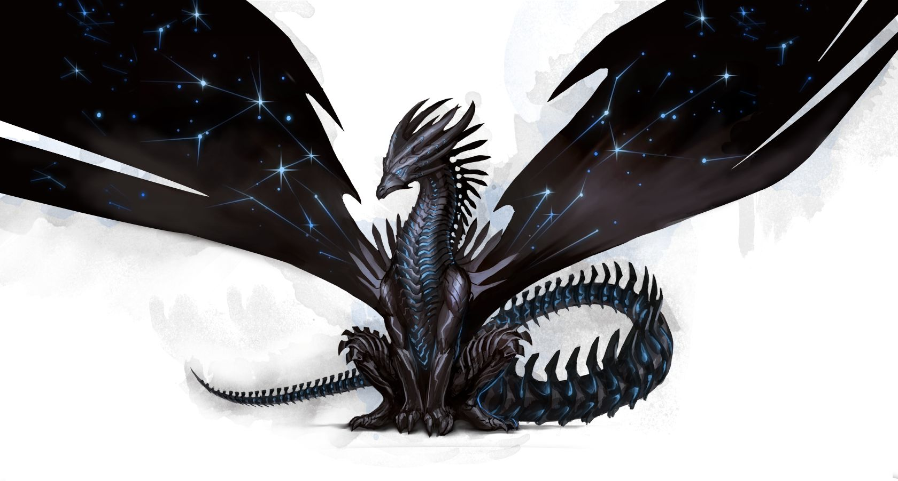

Miasto Nekropolis
Motto: "Życie to zmiana, chaos, plugastwo i cierpienie. Śmierć to spokój, ład i nieskończone piękno."


Charakterystyka:
- Społeczeństwo: Nekromanci, Nieumarli
- Przypisane kolory: czarny i toksyczny zielony
- Bóstwa: Asha – Smok Ładu
- Filozofia:„ Ogarnij próżność”. Fascynacja śmiercią i fanatyczne oddanie się ideom Nekromancji
- Królestwo: Nekromanci to sekretne społeczeństwo, żyjące w cieniu Academy i Haven
- Stolica: Nar Ankar
- Symbole: Pajęcza Matka
Opis:
Nekromanci to odłam Czarodziei, którzy poświęcili swe życie studiom Magii Śmierci, by stać się nieśmiertelnymi. Potrafią kontrolować duchy umarłych i ożywiać zwłoki. Wierzą, że przyjemności są tylko zmysłowe i w związku z tym, każda przyjemność wiedzie w końcu do bólu i cierpienia...
Rozwiązaniem jest poddanie się objęciom śmierci, która idealnie pozbawia zmysłów a co za tym idzie bólu egzystencji. Nekromanci wierzą w nieskoączone i niezmienne życie. Kilkusetletni przedstawiciele Nekromantów stali się Wampirami, wiecznie młodzi, piękni i potężni, jednak tak samo czuli jak kamienne posągi. Podczas bitwy oddziały Necropolis są słabsze od swych żywych przeciwników. Jednak ich rekrutacja jest stosunkowo tańsza, ponieważ są mniej zależni od źródeł materialnych. Dlatego Nieumarli zawsze dążą do tego, by mieć nad przeciwnikiem sporą przewagę liczebną. Są także odporni na morale: śmierci nie może zależeć, nie można ich zmotywować czy zmrozić strachem. Czary umysłu i trucizny również nie mają na nich wpływu.
(RSS - Rok Siódmego Smoka)
Starożytność
62 RSS:Wielka Schizma Siedmiu
Schizma pomiędzy uczniami Sar-Elama, którzy nie potrafili pogodzić się z obraną ścieżką przez Siódmego Smoka, zbyt szybko pragnęli władzy i potęgi, chcieli zająć miejsce Siódmego Smoka. Sar-Antor zakłada Zakon Ślepych Braci, w skład którego wchodzą uzdrowiciele, jasnowidzący i balsamiści, wszyscy oni są wierni Smokowi Ładu – Asha. Sar-Badon zakłada wojowniczy Zakon Smoczych Jeźdźców, są oni zdyscyplinowani i ślepo lojalni. Inni uczniowie prowadzeni przez Sar-Shazzara, najbardziej utalentowanego z nich, wyruszają na południowe pustynie, by tam założyć królestwo Siedmiu Miast (pierwsze królestwo Magii).
74 RSS: Tajemnicza śmierć Sar-Shazzara
Sar-Shazzar umiera podczas snu. Kiedy orszak wyrusza, by złożyć Sar-Shazzara w grobie, jego ciało rozpada się w proch.
461 RSS: Odkrycie Nekromancji
Belketh, uczeą Sar-Shazzara, wkracza na ścieżkę Nekromanty. Eksperymenty z Nekromancją zaczynają się szerzyć wśród Siedmiu Miast.
610 – 660 RSS: Narodziny Nekromantów
Nekromanci rosną w siłę i w końcu stają się potężną frakcją w Siedmiu Miastach.
Nowożytność
751 – 770 RSS: 751 – 770 RSS: Wypędzenie Nekromantów – Wojna Domowa w Siedmiu Miastach
Zazdrośni potęgi, jaką uzyskali Nekromanci, Czarodzieje Siedmiu Miast rozpoczęli szeroko rozpowszechnione prześladowanie Nekromantów. Poczynając od zagrabienia ich majątków, poprzez banicję a na publicznych egzekucjach koącząc. Długa i okrutna wojna spowodowała, że ziemia została wyjałowiona a starożytne Siedem Miast legło w gruzach...
771 RSS: Plany Srebrnej Ligi
Ocaleni Czarodzieje z pogromu Siedmiu Miast weszli w skład Srebrnej Ligi i w rezultacie założyli Srebrne Miasta (drugie królestwo Magii) na ziemiach południowych. Nekromanci pierzchają do nawiedzonej i owianej bardzo złą sławą doliny Heresh, leżącej na dalekim wschodzie.
813 – 822 RSS: Wojna Złamanego Berła
Nekromanci usilnie dążą do zniszczenia Srebrnej Ligi, ale Czarodzieje są bardzo potężni i w koącu najeżdżają dolinę Heresh. Nekromanci w końcu zostają pokonani a ich królestwo jest spustoszone.